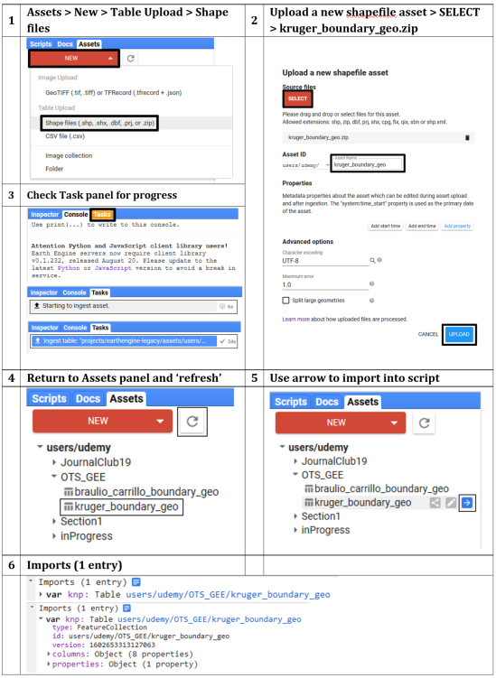
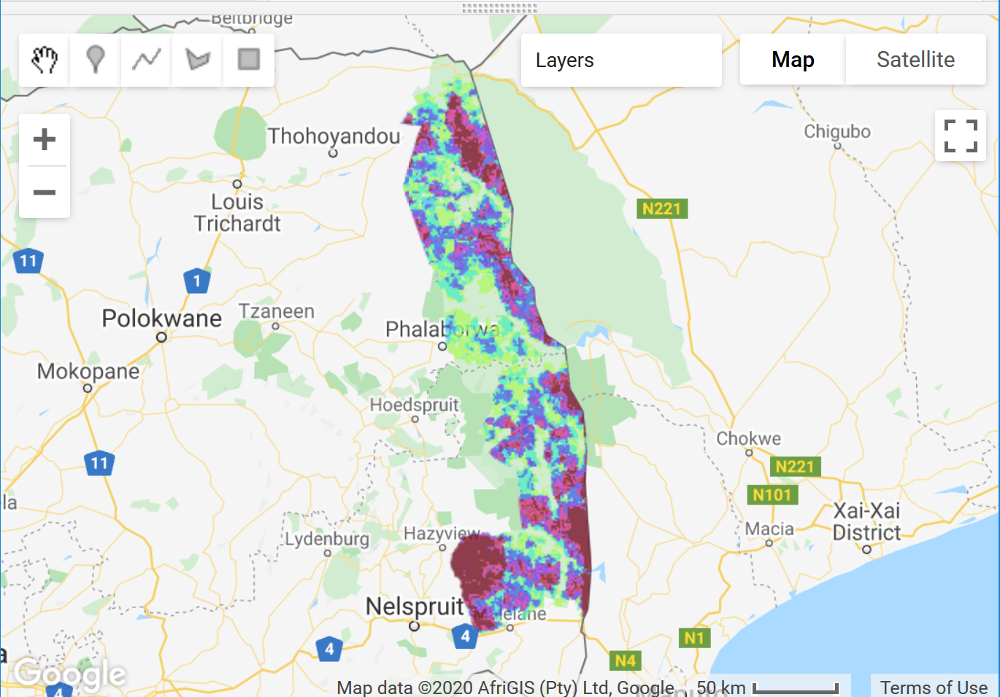
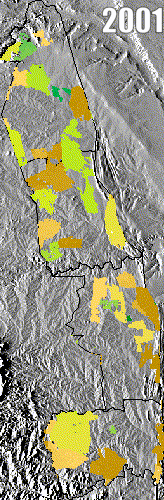
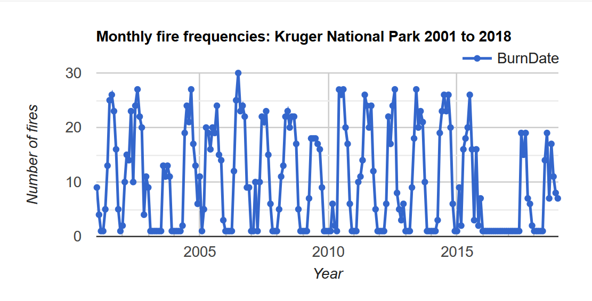
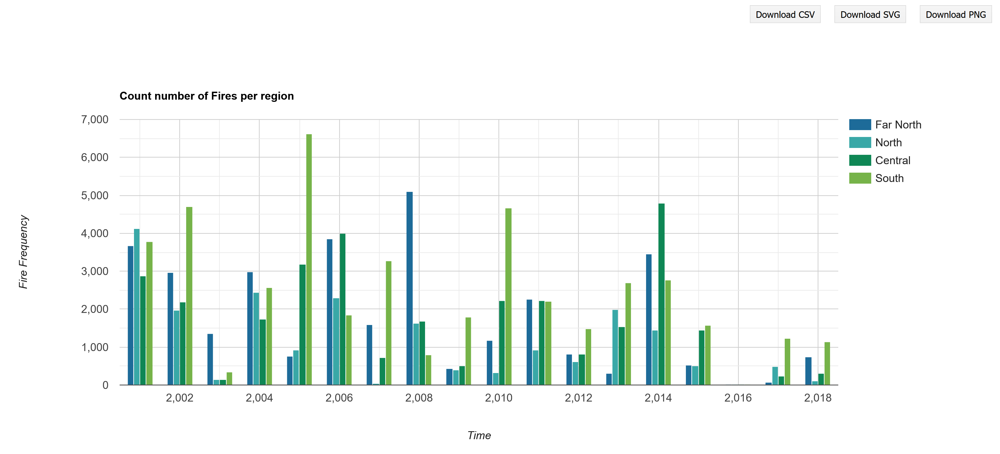
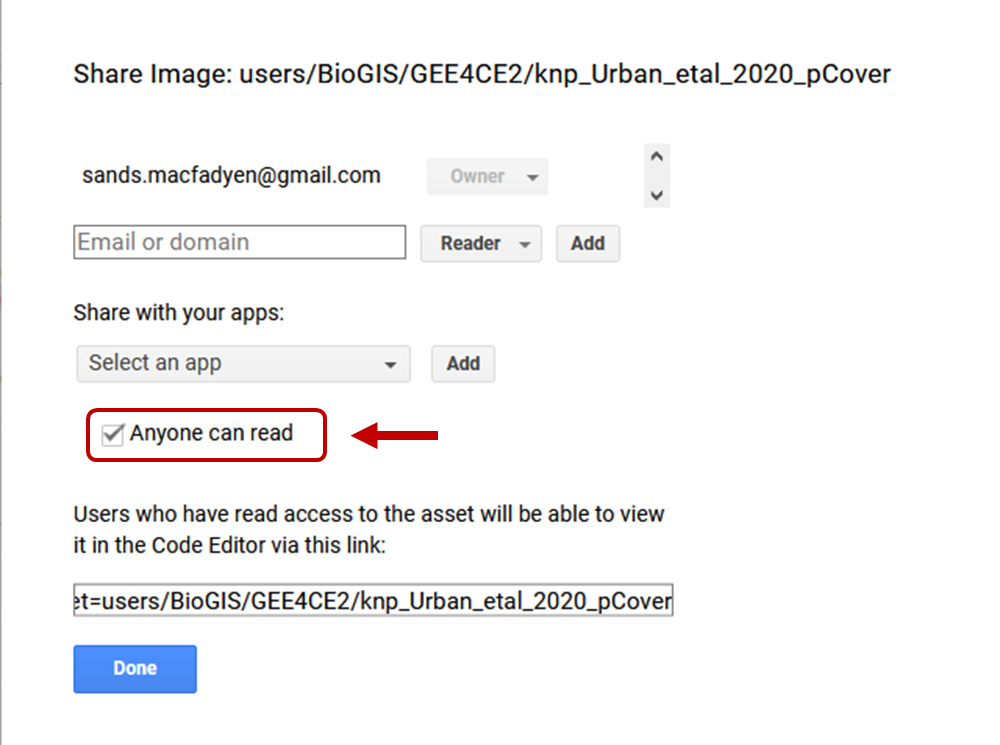

GOOGLE EARTH ENGINE FOR ECOLOGY AND CONSERVATION
Practical 5: Fire frequency in the Kruger National Park, South Africa
by Sandra MacFadyen @ https://www0.sun.ac.za/biomath
Access the practical script here.
Also please download this shapefile delineating regional boundaries in Kruger.
As well as this raster file representing distance to main rivers.
Learning Objectives
By the end of this practical you should be able to:
- Import your own local data as assets (.shp and .tif)
- Access terrain model data from SRTM
- Access monthly burn scar data
- Generate a hillshade using SRTM data
- Explore long-term patterns of fire frequency
- Build an animation and output for use in, for example, PowerPoint presentations
- Visualise relationships using scatterplots
Introduction
Fire is an important driver of landscape pattern, as different fire regimes directly affect biomass production, composition and structure of vegetation.
Indirectly, and together with other landscape features like geology, rainfall and topography, fire also influences animal distribution patterns.
In savanna systems, interactions between herbivory, fire frequency, fire intensity and season can alter tree:grass ratios and system states.
For example, in the Kruger National Park (Kruger) landscapes that are burnt frequently by high intensity fires generally have less woody cover than those
burnt less frequently, at low intensities. Fire regime can also influence vegetation composition, where fire adapted species may dominate in frequently burnt areas,
while those areas less frequently burnt may provide important refugia for more fire sensitive species (Smit et al. 2013).
Fire is therefore an important component for biodiversity conservation planning but how do we find information about fire frequencies,
intensities and seasons for our areas of interest if we haven’t monitored it directly?
GEE has a number of different datasets tagged "fire".
We'll just be looking at one in this practical but I encourage you to explore the others in your own time. Let’s get started……
Data import
In addition to datasets available on Google Earth Engine, in this practical we will learn how to import your own data (like shapefiles or raster grids)
into your workspace from your local hard-drive by uploading them as new assets (Fig. 1).
var dem = ee.Image("USGS/SRTMGL1_003"); var FireCCI = ee.ImageCollection('ESA/CCI/FireCCI/5_1');
The first dataset, SRTM30, is a 30m Digital Elevation Model (DEM) from the Shuttle Radar Topography Mission (SRTM). The second, FireCCI51, is a Fire_cci Burned Area pixel product version 5.1 from MODIS. Figure 1 below, describes how to import the boundary shapefile for the Kruger National Park (Kruger) from files stored locally on your hard-drive. The process is similar to import image files (e.g. GeoTIFF or TFRecords), which we'll go through in class. Download and save the required files from here.

Figure 1: Process to upload a shapefile into GEE as a new assest imported into the script as a FeatureColection
Filtering data
First define your variables for the temporal and spatial windows of interest.
We will use these variables to filter our data before processing.
// Set your start and end dates to filter by var startDate = ee.Date.fromYMD(2001,1,1); var endDate = ee.Date.fromYMD(2018,12,31); var years = ee.List.sequence(2001, 2018); // Or do this later from actual variable i.e. var years = ee.List(fire.aggregate_array('year')).distinct().sort(); // Convert your imported "Table" asset to a geometry // You'll need it later for clipping ImageCollections var zones_geo = zones.geometry(); // Clip the DEM to Kruger var srtm = dem.clipToCollection(zones); // or var dem = dem.clip(knp_aoi) // Select appropriate bands, filter by dates, clip by AOI, // set year and yrmnth properties var fire = FireCCI .select(['BurnDate','ConfidenceLevel']) .filterDate(startDate, endDate) .map(function(img) { // Use function to add year as property to each image return img .clip(zones_geo) .set('year', ee.Image(img).date().get('year')) .set('yrmnth',ee.Date.parse('YYYY_MM_DD', (img.get('system:index'))).format('YYYY_MM')); });
Processing
Now remove all burn scars from the fire dataset that have a confidence interval of less than 50%.
// Remove all fires with less than 50% confidence var confMask = fire.map(function(img) { var conf = img.select('ConfidenceLevel'); var level = conf.gt(50); return img .updateMask(level) .select('BurnDate'); //return only 'BurnDate' band });
Summarise results
Run the function and summarise the burn scars by the frequency areas are burnt
in Kruger annually from 2001 until 2018.
// Count the distinct DOY the occurrences of those fires AND // Set the band property to year var fireCNT = ee.ImageCollection.fromImages(years.map(function(year) { return confMask .filterMetadata('year', 'equals', year) // Filter image collection by year .select('BurnDate').reduce(ee.Reducer.countDistinct()) // Reduce image collection by counting distinct doy .set('year', ee.Date.fromYMD(year, 1, 1).format('YYYY')); }));
Visualise results on a map
To visualise the long-term summaries of your results, first setup your map elements as you've done in previous practicals, then add the layers to your map.
We can do the park-wide summaries "on-the-fly".
// Define a legend for fire frequency // Light colours are areas that burn less frequently, // dark colours are areas that burn often var visCnt = { min:2, max:12, // min:2, max:27 OR 1st StdDev palette:['eef5b7','99f74f','4ff7b0','4fc2f7','3940db', '7239db','db39db','db395c','7c1229']}; // Define legend parameters for unique DOY // Light colours are earlier in the year, dark colours are later var visDOY = { min:1, max:366, palette:['008000','00b050','92d050','c9ee12','ffd966','bf8f00', 'bf8f00','ffd966','c9ee12','92d050','00b050','008000']}; // Add overall results to map Map.centerObject(zones, 7); // Calculate overall mode "on-the-fly" and add to KNP map Map.addLayer(fireCNT.mode(), visDOY, 'Most frequently burnt DOY', true, 0.8); // Calculate overall fire frequencies "on-the-fly" and add to KNP map Map.addLayer(fireCNT.sum(), visCnt, 'Fire frequency', false, 0.8); Map.addLayer(zones,{color: 'grey'}, 'Kruger Park', false, 0.8);

Figure 2: Map with layers indicating the most frequently burnt doy-of-year (doy) and the fire frequency in Kruger from 2001 to 2018
Hillshade and Animation
We can create a hillshade from the DEM using the built-in ee.Terrain.hillshade function.
Unfortunately, we can't add text to your animation from the Code Editor (at least none that I'm aware of) but there are a few ways
you can do this after saving your .gif outside of GEE.
For example, using free image editor software like GIMP; online converters like Ezgif;
the geemap Python API; or even through R with rgee.
// Calculate hillshading and slope var hillshade = ee.Terrain.hillshade(dem); print('Check hillshade', hillshade); // Define the hillshade background legend parameters var srtmParams = { min: 170, // Elevation min 100 max: 187, // Elevation max 840 gamma: 1, }; // // Check visual parameters work for your AOI // Map.addLayer(hillshade, srtmParams, 'Hillshade', true, 0.8); // Set the clipped SRTM image as background var srtmVis = hillshade.visualize(srtmParams); // ------------------------------------------------------------------------- // Define GIF visualization parameters var gifParams = { 'region': zones_geo, 'dimensions': 500, 'crs': 'EPSG:3857', // Check projection 'framesPerSecond': 1 }; // Create RGB visualization images for use as animation frames. var srtmFires = fireDOY.map(function(img) { return srtmVis .paint(zones, 'grey', 1) // Add zones boundary .blend(img.visualize(visDOY)); // Blend hillshade with zones and clip }); // print("check srtmFires", srtmFires); // Print the GIF URL to the console var myGIF = srtmFires.getVideoThumbURL(gifParams); print(myGIF); // Render the GIF animation in the console print(ui.Thumbnail({ image: srtmFires, params: gifParams, style: { position: 'bottom-right', width: '180px' }})); // Or create a video thumbnail and add it to the map. var thumb = ui.Thumbnail({ // Specifying a collection for "image" animates the sequence of images. image: srtmFires, params: gifParams, style: { position: 'bottom-right', width: '160px' }}); Map.add(thumb);

Figure 3: Animation of days fires occurred in Kruger from 2001 to 2018. Light colours represent fires that happened earlier in the year, while dark colours are those that burnt in later months
To export the animation, simply right mouse-click and select Save Image As… to save the animation locally as a .GIF file to your hard-drive.
Charting
To plot these results, first define your chart parameters (e.g. title and axis labels), then create the different charts,
incorporating these pre-defined chart parameters and print it to the console as follows:
// Monthly fire frequencies per year for the whole Park // Chart parameters var opt_cntFireMonth = { title: 'Monthly fire frequencies: Kruger National Park 2001 to 2018', pointSize: 3, hAxis: {title: 'Year'}, vAxis: {title: 'Number of fires'}, }; // Plot day count of monthly fires var cntFireMonth_chart = ui.Chart.image.series({ // ui.Chart.image.byRegion imageCollection: confMask.select('BurnDate'), xProperty: 'yrmnth', region: zones_geo, reducer: ee.Reducer.countDistinct(), scale: 250 }).setOptions(opt_cntFireMonth).setChartType('LineChart'); print(cntFireMonth_chart);;

Figure 4: Line chart the number of days a fire occured in Kruger from 2001 to 2018
// Annual fire frequencies per region // Count for individual image and return annual sum unique doy // Again, pre-define the chart parameters var opt_fireYr = { title: 'Count number of Fires per region', hAxis: {title: 'Time'}, vAxis: {title: 'Fire Frequency'}, colors: ['1d6b99', '39a8a7', '0f8755', '76b349'] }; // Same thing but summarised by region instead var fireYr_chart = ui.Chart.image.seriesByRegion({ imageCollection: fireCNT, regions: zones, reducer: ee.Reducer.sum(), band: 'BurnDate_count', scale: 1000, xProperty: 'year', seriesProperty: 'region'}) .setChartType('ColumnChart') .setOptions(opt_fireYr); print(fireYr_chart);

Figure 5: Number of fires by region from 2001 to 2018
More on charting: Visualising relationships
An easy way to visualise the relationship between variables is using a scatterplot.
For example, using your own point data intersected with bioclimatic variables, or between two images as follows:
// Add the two images together as xxx // Rename the bands at the same time var rivCov = river.addBands(cover).rename(['river','cover']); print('Check rivCov', rivCov); // Get a sample sample of points across var sample = rivCov.sampleRegions(knpGeo, null, 5000);//408453 vs 102046 // Or sample N points = geometry features to plot // var sample = coverHgt.sample({ region: knpAOI, scale: 30, numPixels: 4000, geometries: true}); // Map.addLayer(sample.style({ color: 'blue', pointSize: 1 }), {}, 'samples'); print('Check sample size', sample.size()); print('Check sample info', sample); var chart = ui.Chart.feature.byFeature(sample, 'cover', 'river') .setChartType('ScatterChart') .setOptions({pointSize: 2, pointColor: 'blue', titleX: 'Tree Cover (Urban et al 2020)', titleY: 'Distance to River', trendlines: { 0: {showR2: true, visibleInLegend: true} , 1: {showR2: true, visibleInLegend: true}} }); print(chart);
Practical Assignment #5
Please complete the practical exercise below and share your script with us, as you have done in previous practicals.
This time, don't forget to also share your local assets with use (see figure below for help).
!NB! Remember to add the prac number in the header please.

// Upload a local asset, a shapefile boundary for example, and share the assest // before importing it as an import entry into your script // Import and filter a GEE dataset (e.g. FireCCI) of your choice // Generate an animation (with or without a hillshade) // Finally chart the results and group-by a region filed (hint: see lines 227-248)
If you're feeling adventurous and would like to try the scatterplot example with Tree Cover by
Urban et al (2020), you can download the .tif version of the
percentage tree cover for Kruger here.
Please share your feedback on this practical by completing this quick (2 min) survey. Thank you.